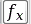

Figure 6.1: MatrixUser Toolbar Icon
MRiLab incorporated a set of image display and analysis tools. They are designed using Matlab GUIDE, and carefully tuned for manipulating multi-dimensional image data in Matlab.
The user can right click on any MRiLab graphical axes to create an individual figure with the identical graphical content.
MRiLab incorporated a toolbox called ‘MatrixUser’ for performing image display and analysis. This toolbox can be activated by pressing ‘MatrixUser’ toolbar icon located at the top of the main simulation console.
MatrixUser will search through the current output folder and load all image series from this folder into Matlab base workspace. The MatrixUser main window (Figure 6.2) works as a matrix manager for loaded images. The user can choose to display image series by using the pop-up menu. The matrix size, type and value range are calculated and provided on the right side. The user can press ‘MatrixUser’ button to activate MatrixUser display window. Current MatrixUser version supports displaying any valid Matlab multi-dimensional matrix and Matlab structure variable.
By default, MatrixUser reads Matlab base workspace, scans existing matrices in the Matlab session, then creates a matrix list for tracking matrix content. Once those matrices are updated by the user, MatrixUser will also update the matrix list. Moreover, there are several different approaches to import data from outside Matlab into MatrixUser. The imported matrices will be saved into Matlab base workspace. The import functions are located under ‘Load’ menu, including:
The default Matlab .mat file is natively supported by MatrixUser.
If image content exists in the system clipboard, it can be converted into a RGB image which contains a three slice matrix with each slice corresponds to an individual Red, Green and Blue channel.
MatrixUser takes a full screenshot for current monitor and saves it into a RGB image as described above.
Binary data file is supported by MatrixUser. The user needs to properly configure loading parameters (Figure 6.3) according to the matrix size and data type information.
MatrixUser supports loading multiple DICOM files by using a file filter interface (Figure 6.4). The user needs to load DICOM files into the loading interface by selecting desired DICOM files (multiple selection supported). The selected files are listed in the DICOM file list. The user can click any single DICOM file to read associated DICOM header and image preview. To manually create a matrix using DICOM files, choose files from the DICOM file list, press ‘>>>>>>’ to push the files into selected DICOM file list, provide a matrix name, press ‘Convert’ button to create a matrix based on chosen DICOM files. The user can load those created matrices into base workspace by pressing ‘Load matrix’ button.
MatrixUser supports loading DICOM files in a batch mode. This function requires the path of the folder containing DICOM files is provided. MatrixUser will try to create separate matrices for DICOM files coming from different image series. A matrix selection interface will provide converted matrices with loading functions.
NIfTI file with .nii suffix is supported by MatrixUser.
To activate MatrixUser display window, press ‘MatrixUser’ button. If the selected matrix contains complex value, four options are available for displaying magnitude, phase, real and imaginary of the matrix. Figure 6.5 demonstrates an overview of the window layout of the MatrixUser display window. The window consists of
Matlab toolbar provides basic interactive functions for displaying matrix. These functions include:
 : Zoom in matrix area
: Zoom in matrix area
 : Manually move matrix position
: Manually move matrix position
 : Check individual voxel value and index
: Check individual voxel value and index
 : Print current figure
: Print current figure
 : Turn on/off color bar
: Turn on/off color barMost of the matrix analysis functions are represented on function bench panel. MatrixUser groups these functions into categories and dynamically loads them according to the dimension size and compatibility of current display matrix. A multi-tab is used to contain individual function button associated with each function. The tabs under the multi-tab are used to switch between function categories, which include
The matrix calculator consists of three control items, including a matrix expression editbox, an execution button (  ) and a matrix saving button ( ). Valid matrix calculation expression can be executed in the calculator and updated in the display window, serving as a convenient way to analyze matrix calculation result. Matrix concatenation and recombination can also be done in the calculator, for example, to side-by-side compare multiple 3D matrices (Figure 6.6). Some valid calculation examples are, but not limited to:
where A, B, C and D are multi-dimensional matrices with proper matrix size. Also note that the source matrices have to stay in the base workspace for being referenced. Pressing the execution button will perform the calculation and save the result as a temporary matrix. The user can also save the temporary matrix into workspace by pressing matrix saving button. The saved temporary matrix will have a ‘_tmp’ suffix by default.
The display axes renders an image for one slice of current matrix. The user can use mouse cursor to inspect the coordinate and value of any voxel. Moving mouse wheel back and forth moves the slice location along current dimension and updates the display axes.
The matrix color control group provides a set of sliders, editboxes and popup menu which help control image color scheme and contrast. This group consists of
MatrixUser measures the dimension size of the display matrix and assigns one slider and editbox for each dimension that is above 2 (i.e. no slider and editbox for the first and second dimension). These control items are located in individual dimension tab and can be used to switch among slices in current active dimension.
Matrix display functions are listed under this tab.
 : Turn on and off black grid line on the image display axes
: Turn on and off black grid line on the image display axes
 : Plot and update a profile curve along a resizable checking
line (Figure 6.7)
: Plot and update a profile curve along a resizable checking
line (Figure 6.7)

 : Activate or deactivate localizer line on main display
: Activate or deactivate localizer line on main display
 : Activate or deactivate localizer line on main display
: Activate or deactivate localizer line on main display
 : Switch matrices between main display and second
display. This operation simply permutes current matrix into its
orthogonal version. The user can save the transformed matrix
using ( ).
: Switch matrices between main display and second
display. This operation simply permutes current matrix into its
orthogonal version. The user can save the transformed matrix
using ( ). : Create a RGB image, assign current slice and following two slices
to Red, Green and Blue channel, respectively
: Create a RGB image, assign current slice and following two slices
to Red, Green and Blue channel, respectively
 : Overlap two matrices with the same matrix size (Figure 6.11),
notice that the user can press to remove foreground matrix from
overlapping with background matrix.
: Overlap two matrices with the same matrix size (Figure 6.11),
notice that the user can press to remove foreground matrix from
overlapping with background matrix.
This function category performs quick math calculation for current matrix. A few commonly used math calculation are provided under this tab. Instead, complex calculation can be performed using matrix calculator as mentioned above.
 : Calculate absolute value
: Calculate absolute value
 : Calculate natural logarithm
: Calculate natural logarithm
 : Calculate exponential
: Calculate exponential
 : Calculate the power of 10
: Calculate the power of 10
 : Calculate cosine
: Calculate cosine
 : Calculate tangent
: Calculate tangent
 : Calculate inverse sine
: Calculate inverse sine
 : Calculate inverse cosine
: Calculate inverse cosine
This function category performs spatial transformation or fast Fourier transform (FFT) to current matrix.
 : Flip matrix vertically (along the second dimension)
: Flip matrix vertically (along the second dimension)
 : Flip matrix along slice direction (the third dimension)
: Flip matrix along slice direction (the third dimension)
 : Rotate matrix 90 degree in the counter clockwise direction
: Rotate matrix 90 degree in the counter clockwise direction
 : Rotate matrix 90 degree in the clockwise direction
: Rotate matrix 90 degree in the clockwise direction
 : Rotate matrix certain degree along an axis specified using
the rotation axis origin and direction in the 3D space
: Rotate matrix certain degree along an axis specified using
the rotation axis origin and direction in the 3D space
 : Perform multi-dimensional FFT for current matrix, the user
needs to specify up to which dimension to perform FFT.
: Perform multi-dimensional FFT for current matrix, the user
needs to specify up to which dimension to perform FFT.This function category performs basic matrix processing functions.
 : Perform sharpening operation to current matrix
: Perform sharpening operation to current matrix
 : Perform edge detection to current matrix
: Perform edge detection to current matrix
 : Provides various image filters (Figure 6.12)
: Provides various image filters (Figure 6.12)
 : Replace voxel value for the voxels within certain value range and
inside a polygon area. The user needs to draw a polygon first (double click
to confirm the polygon).
: Replace voxel value for the voxels within certain value range and
inside a polygon area. The user needs to draw a polygon first (double click
to confirm the polygon).
 : Extract parts of current matrix using irregular shape (double
click to confirm the extracting)
: Extract parts of current matrix using irregular shape (double
click to confirm the extracting)

MatrixUser provides a set of function buttons for performing Region-of-Interest (ROI) analysis (Figure 6.15). To create a ROI, the user needs to click ROI button first, then draw a ROI on the image axes. The statistical measures (i.e. mean, standard deviation and relative standard deviation) for voxels in delineated ROI is calculated and updated with moving ROI position or changing ROI shape. The ROI function buttons consists of
 : Draw a rectangle or square ROI
: Draw a rectangle or square ROI
 : Draw a polygon ROI
: Draw a polygon ROI
 : Draw a straight line for measuring distance in units of pixels
: Draw a straight line for measuring distance in units of pixels
 : Draw a polygon for measuring the interior angles in degrees
: Draw a polygon for measuring the interior angles in degrees
MatrixUser supports functions for performing multi-slice manual segmentation. To create a segmentation, click segmentation button, then draw a region on the image axes. The user can modify the region location and shape prior to confirming segmentation with double click. The segmentation buttons consists of
 : Do a free-hand segmentation
: Do a free-hand segmentation
 : Do a circle or ellipse segmentation
: Do a circle or ellipse segmentation
 : Do a polygon segmentation
: Do a polygon segmentation
 : Save segmentation into a MAT file
: Save segmentation into a MAT file
 : Load segmentation from a MAT file
: Load segmentation from a MAT fileTo edit segmented region (Figure 6.17), press to open a segmentation
manager. The manager records the type and location for existing segmented
regions. The user can click any region item to inspect the location of the region.
To edit chosen region, click ‘Edit’ button to activate the region outline. Both
the shape and mask flag are editable for segmented region. After editing, click
‘Update’ to conform modification. The user can press to save current
segmentation into a MAT file which contains a mask matrix and a cell array
storing segmentation location information. The user can also press to
save the mask matrix into workspace. Pressing can load previous
segmented regions from a saved MAT file. Notice that the user can
press to remove segmentation from overlapping with background
matrix.
This function category generates surface or mesh plot for current image.
 : Create contour plot of current matrix
: Create contour plot of current matrix
 : Create 3D contour plot of current matrix
: Create 3D contour plot of current matrix
 : Create filled 2D contour plot
: Create filled 2D contour plot
 : Create surface plot with colormap based lighting
: Create surface plot with colormap based lighting
 : Create mesh plot
: Create mesh plot
 : Create mesh plot and contour
: Create mesh plot and contour
 : Create a curtain around a mesh plot
: Create a curtain around a mesh plot
 : Create a ribbon plot
: Create a ribbon plot
Matlab default image tools (Figure 6.18) are tailored for MatrixUser and included in this category.
 : Perform imtool for current image
: Perform imtool for current image
 : Perform immovie for playback current 3D matrix
: Perform immovie for playback current 3D matrix
 : Perform imcontrast for adjusting image contrast
: Perform imcontrast for adjusting image contrastUncategorized functions are categorized under this tab.
 : Perform projection along a given matrix dimension. Support
multi-dimensional matrix projection
: Perform projection along a given matrix dimension. Support
multi-dimensional matrix projection
 : Perform 3D projection along x, y or z axis with certain angle
increment (Figure 6.20)
: Perform 3D projection along x, y or z axis with certain angle
increment (Figure 6.20)
 : Reslice 3D matrix at given direction. The user needs to draw a
line for indicating the slicing direction with double click for confirmation
(Figure 6.21)
: Reslice 3D matrix at given direction. The user needs to draw a
line for indicating the slicing direction with double click for confirmation
(Figure 6.21)
The arrayShow tool is a Matlab image viewer which has been designed for the evaluation of multidimensional complex images. arrayShow is originally designed by Tilman Johannes Sumpf at Biomedizinische NMR Forschungs GmbH. The user can press ‘arrayShow’ button to activate this viewer. Detailed information about arrayShow can be found at http://www.biomednmr.mpg.de/index.php?option=com_content&task=view&id=137&Itemid=43;
The SpinWatcher is designed for monitoring spin evolution behavior within a single voxel at given MR sequence and field environment. This function can be activated by pressing ‘SpinWatcher’ toolbar icon located at the top of the main simulation console.
Figure 6.23 demonstrates an overview of the SpinWatcher main interface. This interface consists of
 . The slider beside the image can help change
image slices.
. The slider beside the image can help change
image slices.
The spin properties will be automatically updated with a selected voxel. The user can modify the spin properties and environment to meet their own needs. The editable properties provided in this interface include:
The SpinWatcher supports monitoring multiple spin species. The user needs to provide an array of multiple values for T1, T2, T2*, Rho and ChemShift, and give the correct number of spin species. The values must be separated with space. For example
SpinWatcher provides two plots for capturing the spin evolution (i.e. |Mxy| and Mz) regarding time. Press ‘Execute’ button to recalculate the spin evolution plot if changes to spin property and environment was made. The settings can be saved into a file by pressing ‘Update’. To export temporary variables of spin evolution into Matlab base workspace, press ‘Export’, the exported variables include :
The user can also undock the spin evolution plot by pressing ‘∧’ button.
The SARWatcher is a graphical toolbox for monitoring time varying spatial Specific Absorption Rate (SAR) of the virtual object under given experimental design. This function can be activated by pressing ‘SARWatcher’ toolbar icon located at the top of the main simulation console. Note that in order to evaluate SAR, transmitting RF coil with E1 field is required. One example can be found at Coil_8ChHeadSAR.
Figure 6.25 demonstrates an overview of the SARWatcher main interface. This interface consists of
The user can export the SAR and power map in a separate window by pressing ‘Export’ button. Pressing ‘Update’ button updates any modifications. The spatial SAR and power calculation follows the methods described in literature [11, 12]. The spatial N-gram SAR averaging is implemented using a method described in literature [13].
(:TODO) SeqConverter is a graphical toolbox for converting MRiLab MR sequence format to more portable sequence format. This toolbox is still under developing.